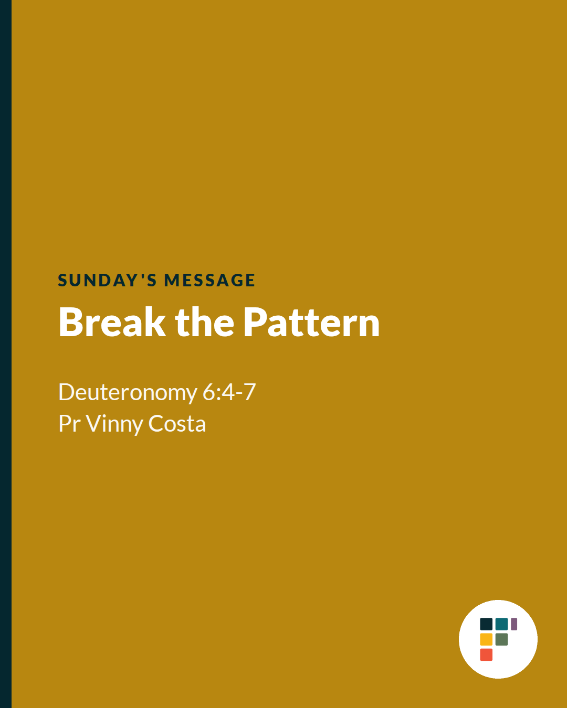
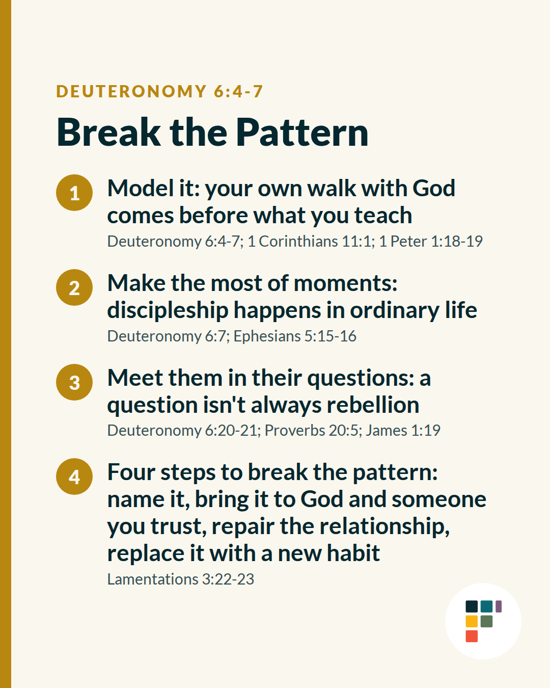
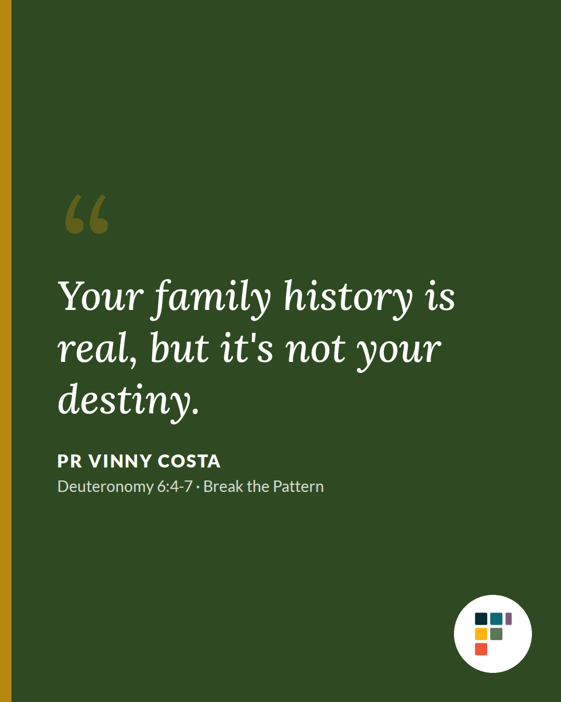
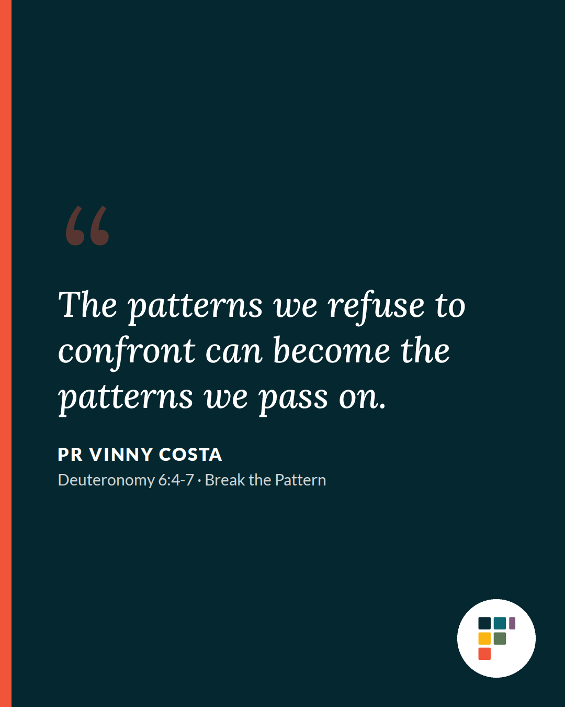
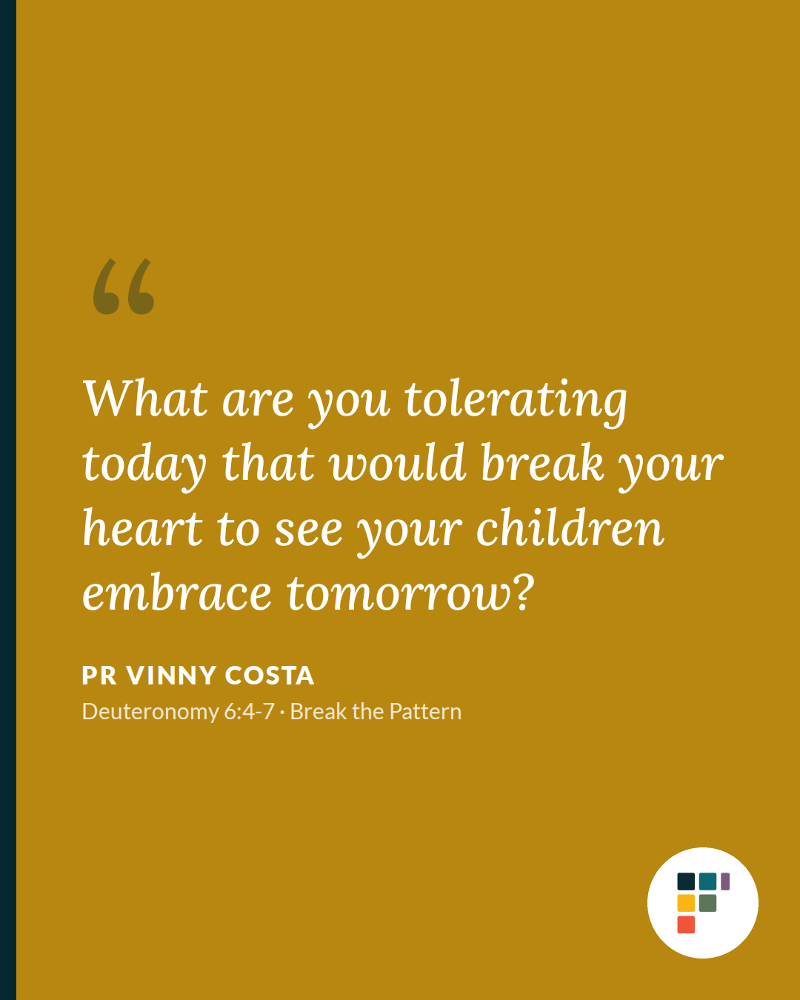
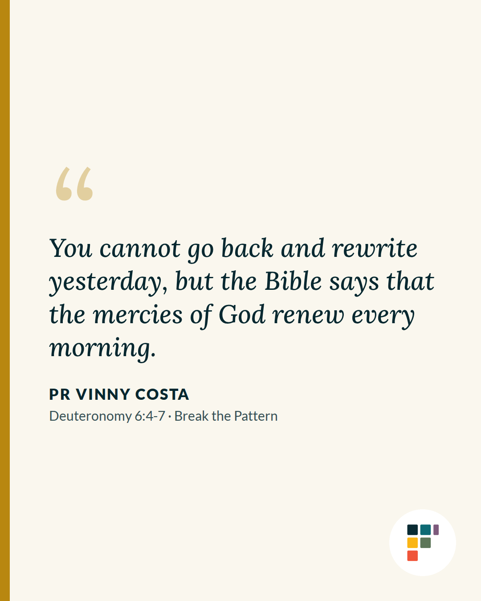
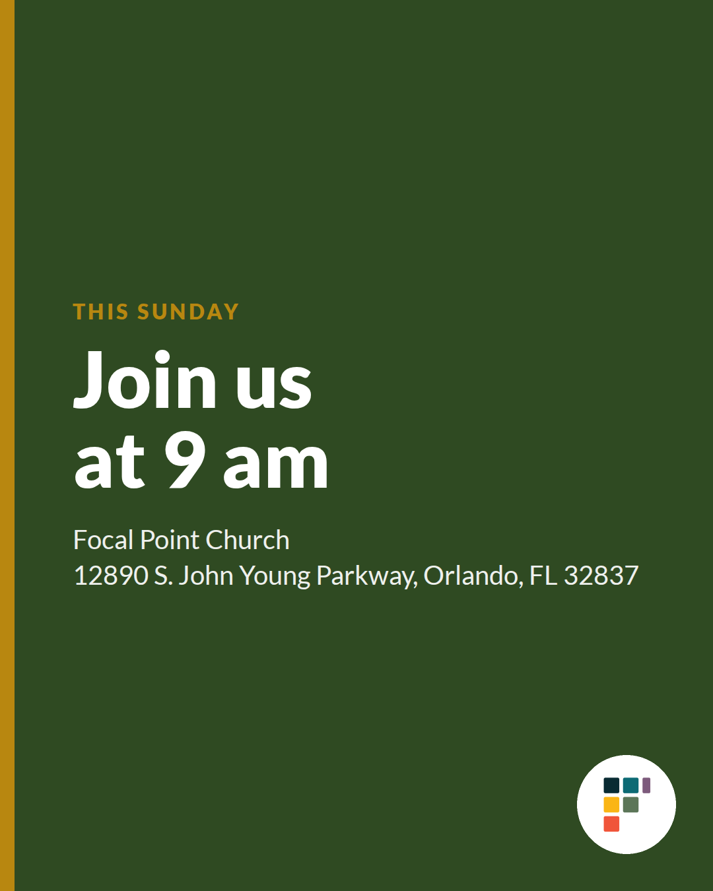

Everything here was made from one thing: the sermon you already posted. 7 graphics and 3 short video clips, with captions, scheduled across the week. Every quote is your preacher's own words, checked against the sermon.
Your week
Mon Nov 30
· 09:00Sermon recap

This Thanksgiving week, Pr Vinny Costa brought us a message called "Break the Pattern," part of our Arrows series. Building on last week's look at Psalm 127, he reminded us that before an arrow can be aimed, it has to be shaped. An arrow maker works with rough wood that remembers its old bend, and we are a lot like that wood. Old patterns can show up on a stressful Tuesday night, even after we have given our lives to Jesus.
From Deuteronomy 6:4-7, we saw that shaping the next generation begins with our own relationship with God. Three ways to break destructive patterns and build a different legacy:
1. Model it. Our children watch how we live. We are not after perfection, but direction.
2. Make the most of moments. Discipleship happens in ordinary life, in the car line, at the dinner table, and in the everyday.
3. Meet them in their questions. A question isn't always rebellion. Sometimes it's an invitation for discipleship.
Because of Jesus, our family history is real, but it is not our destiny. We were challenged to take four steps this week: name it, bring it to God and someone we trust, repair the relationship, and replace it with a new habit.
Whatever has come down your lineage, there is grace for a new beginning. Which one step will you take this week?
Mon Nov 30
· 18:00Main points

This week in our Arrows series, "Break the Pattern," we looked at Deuteronomy 6 and three ways to build a different legacy: model it, make the most of moments, and meet them in their questions. Then we were given four steps: name it, bring it to God, repair it, and replace it. Which of these is God speaking to you about today?
#BreakThePattern #Arrows #FocalPointChurch #SermonRecap
Tue Dec 1
· 09:00Quote graphic

Whatever you inherited, whether it was anger, silence, or fear, it does not get the final word. In Christ, we are a new creation, and transformation is possible. This Sunday we were reminded that the past is real, but Jesus gives us a way to begin again. 🙏 What is one thing you are asking God to change in you this week?
#BreakThePattern #Arrows #FocalPointChurch #NewCreation
Tue Dec 1
· 18:00Video clip (Reel)
The patterns we refuse to confront can become the patterns we pass on. But the good news is that what was passed down to you doesn't have to determine what you pass on. We are all shaped by someone, and we are all shaping someone else. Watch this short moment from "Break the Pattern."
Wed Dec 2
· 09:00Quote graphic

Like a piece of wood that remembers its old bend, we can slip back into old habits, especially under pressure. Naming what we have inherited is the first step toward healing. This week, we are invited to bring it honestly to God and to someone we trust. What is one pattern you want to name?
#BreakThePattern #Arrows #FocalPointChurch #Deuteronomy6
Wed Dec 2
· 18:00Video clip (Reel)
What are we tolerating today that would break our hearts to see the next generation embrace tomorrow? Pr Vinny asks the question honestly, as a dad who still needs to say sorry sometimes. Humility is part of how we model Jesus to the people who are watching us.
Thu Dec 3
· 09:00Quote graphic

Sometimes the best question isn't about what is wrong with others, but about what we have grown comfortable with. Pr Vinny invited us to think about what we are tolerating today that we would never want the next generation to embrace. Take a quiet moment with the Lord and let Him speak. What comes to mind?
#BreakThePattern #Arrows #FocalPointChurch #Legacy
Thu Dec 3
· 18:00Video clip (Reel)
Your family history is real, but it is not your destiny. In Christ, we are a new creation, and the past does not have to control our future. You may have learned anger, but you can learn gentleness. Transformation is possible in Jesus.
Fri Dec 4
· 09:00Quote graphic

If you are thinking about the mistakes you have made or the time you have missed, take heart. We cannot change yesterday, but God's mercies are new every morning, and there is grace for a new beginning. 🤍 Who might you reach out to this week to start again?
#BreakThePattern #Grace #FocalPointChurch #NewMercies
Sat Dec 5
· 10:00Sunday invite

We'd love to worship with you this Sunday at 9 am! Focal Point Church, 12890 S. John Young Parkway, Orlando, FL 32837. There's a seat for you. 🧡
Want this every week?
Keep posting your sermon to YouTube. We make and post the rest to your Instagram and Facebook, or send it to you to approve first. $79/month, cancel anytime.
Subscribe, $79/month
Or pay yearly: $790 (2 months free)
Questions? Reply to the email this came in, or write to joelspulpittopost@gmail.com